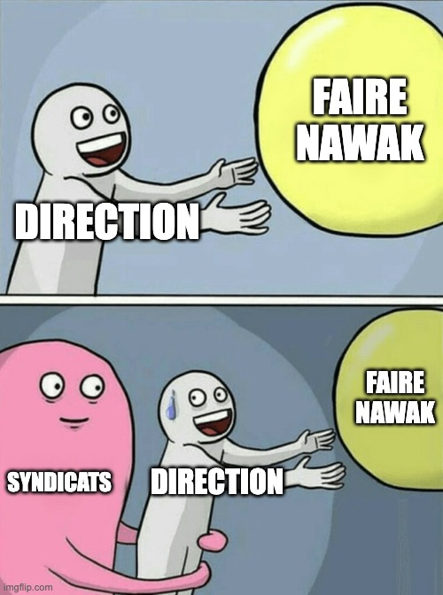
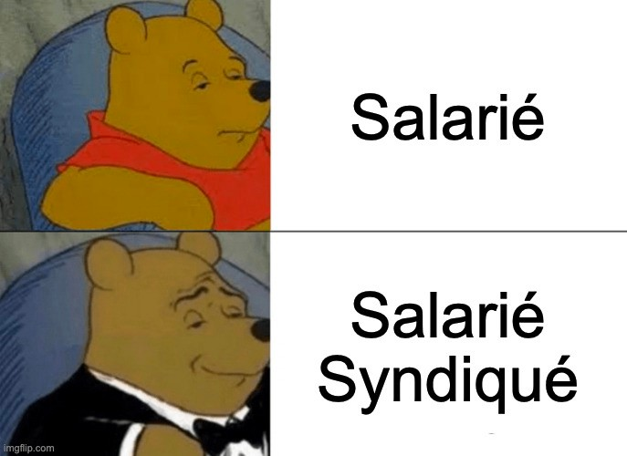

En tant qu’employé·e·s, nous avons une position subordonnée à notre employeur (solo on fait pas le malin face à la direction).
Elle a un avantage pour favoriser ses intérêts et prendre des décisions en toute tranquillité.
Pour équilibrer la balance, les salarié·e·s peuvent s'unir afin de représenter leurs intérêts et défendre leurs droits sous forme d'une association : c'est le syndicat.
C’est vrai, y’a déjà le CSE pour représenter les salarié·e·s. Pourquoi en plus se syndiquer ?
Comparé au CSE qui a un pouvoir très limité, les syndicats étant des structures extérieures à l’entreprise, ils ont la liberté et les moyens d’agir.
En tant que membre d’un syndicat, je peux par exemple :
Il y a aussi les grèves (qui sont cools) ! Bien qu’elles puissent être lancées par n’importe qui, elles sont souvent organisées par les syndicats pour mobiliser les troupes !
Bref, cette union des salarié·e·s est un contre pouvoir qui empêche l’employeur de n’en faire qu’à sa tête !

Alors, ça va dépendre du syndicat, la cotisation est souvent un pourcentage du salaire net.
Chez Solidaires par exemple, pour un revenu au SMIC c’est 0,55% par mois soit environ 7€50/mois.
C’est ce qui permet aux syndicats d’organiser les formations, d’accompagner les salariés en justice etc...
Non ! Chacun et chacune est libre de s’investir comme il ou elle le souhaite. On peut juste adhérer et cotiser pour aider au financement des actions sans jamais y participer.
Il existe une multitude de syndicats ayant des positions politiques plus ou moins modérées face au patronat. Chaque syndicat a ensuite des groupes par secteur d’activité comme SUD Education, CGT Cheminots, etc… Il est recommandé de trouver le groupe de son secteur afin d’avoir le meilleur accompagnement possible 🙂
Bref, pour vous aider voici quelques noms pour avoir une idée du paysage syndical :

Oui ! Il n’y a pas besoin d’une présence syndicale, vous pouvez être le syndiqué 0 !
Pas du tout ! Il suffit d’adhérer à l’association en se rendant sur le site du syndicat et de remplir le formulaire d’inscription.
Ensuite il y a souvent des sessions d’accueil dans les groupes locaux pour expliquer comment ça se passe, les actions en cours, le fonctionnement, etc...
Ça dépend pour qui !
La direction préfère gouverner seule, tout avis contraire sera forcément perçu comme emmerdant. Sans les syndicats, les intérêts des salariés seraient moins représentés et leurs droits moins bien défendus. Ils défendent une vision du monde du travail plus humaine et plus égalitaire, qui est rarement portée par les employeurs eux-mêmes.
C'est sûr une manifestation devant les locaux avec des journalistes ça peut irriter. Mais s’il n’y a que la direction qui râle, c’est plutôt bon signe 👍
C'est bon tu sais tout ! Y'a plus qu'à 😎